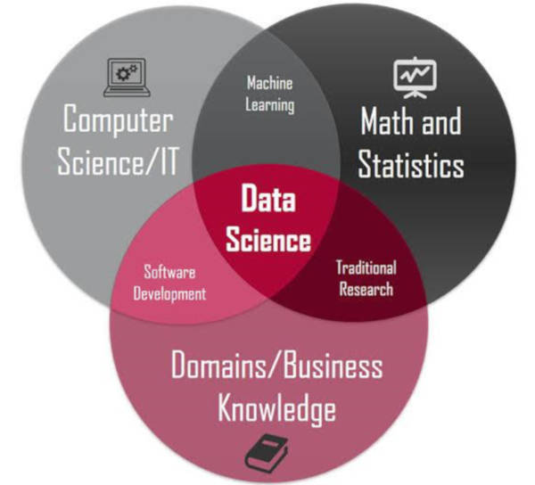

Data Science: What and why
Reading
Discussion question
Why did you decide to take a class called “data science”?
Standard definition

The intersection of computer science/software engineering, statistics, and “business knowledge”
But this defines data science in terms of tools and techniques, not epistemic and practical goals. Compare:
- An ecologist is someone who spends most of their time collecting specimens in the field and processing them in a lab, vs.
- An ecologist is someone who studies interactions among organisms and their environment
Discussion questions
What are the epistemic and practical goals of your scientific field?
How do you think “data science” will be useful for pursuing those goals?